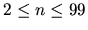

| Optimisation |
A company decides to simulate on computer the process of manufacturing its own goods. In order to do that, it makes the following observations:
So, all steps are total dependants of step 1.
Example: In the process shown by the figure 1 the step 4
is total dependant of step 3, steps 5,6 and 7 are total dependants
of 4 (hence of 3), but step 3 is not total dependant of step 2.
The Computing Center Dept. of company notes that whole manufacturing process is
easier to be controlled if it would be structured by a tree, as follows:
The tree associated to the diagram from figure 1 is shown in figure 2.

Your task is to write a program that builds this dependence tree.
n - number of steps of manufacturing process (
);
| a11 | a12 | a1n | |
| a21 | a22 | a2n | |
| an1 | an2 | ann |
where aij=1 if step j follows directly step i in the process diagram, otherwise aij=0.

with the meaning that node j is a direct descendant of node i in the tree. The pair (i1 j1) follows (i2 j2) if and only if (i1<i2) or (i1=i2 and j1<j2).
10 0 1 1 0 0 0 0 0 0 0 0 0 1 0 0 0 0 0 0 0 0 0 0 1 0 0 0 0 0 0 0 0 1 0 1 1 0 0 0 0 0 0 0 0 0 0 1 0 0 0 0 0 0 0 0 0 1 0 0 0 0 0 0 1 0 0 0 1 0 0 0 0 1 0 0 0 0 0 1 1 1 0 0 0 0 0 0 0 0 0 0 0 0 0 0 0 1 0 0 0
1 2 1 3 3 4 4 5 4 6 4 7 7 8 8 9 8 10